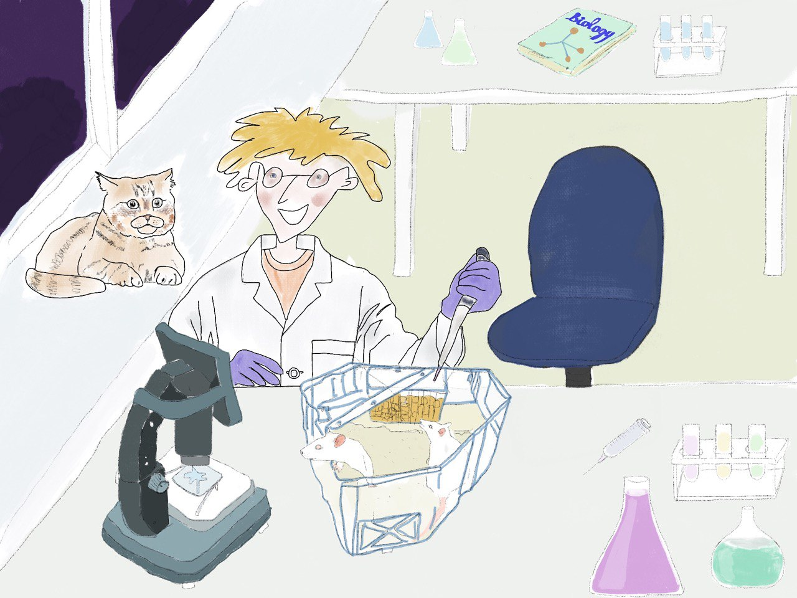
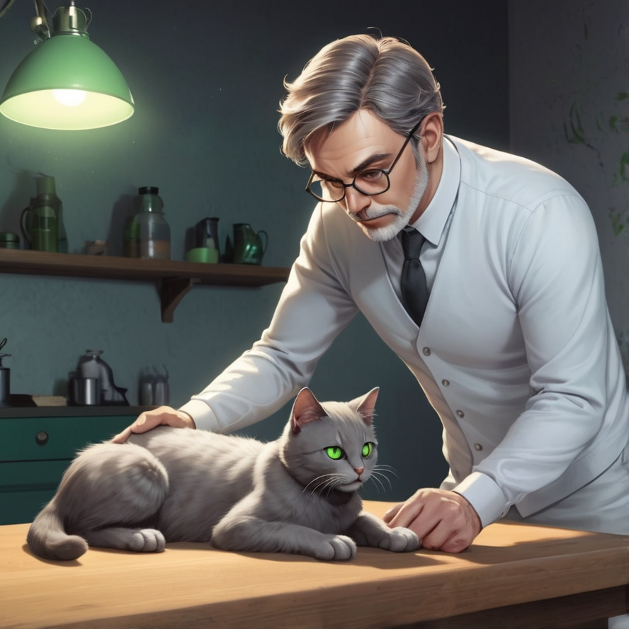
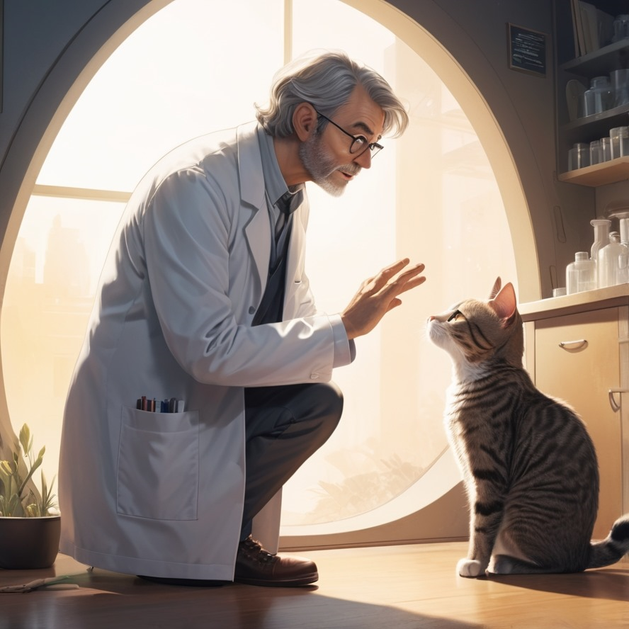
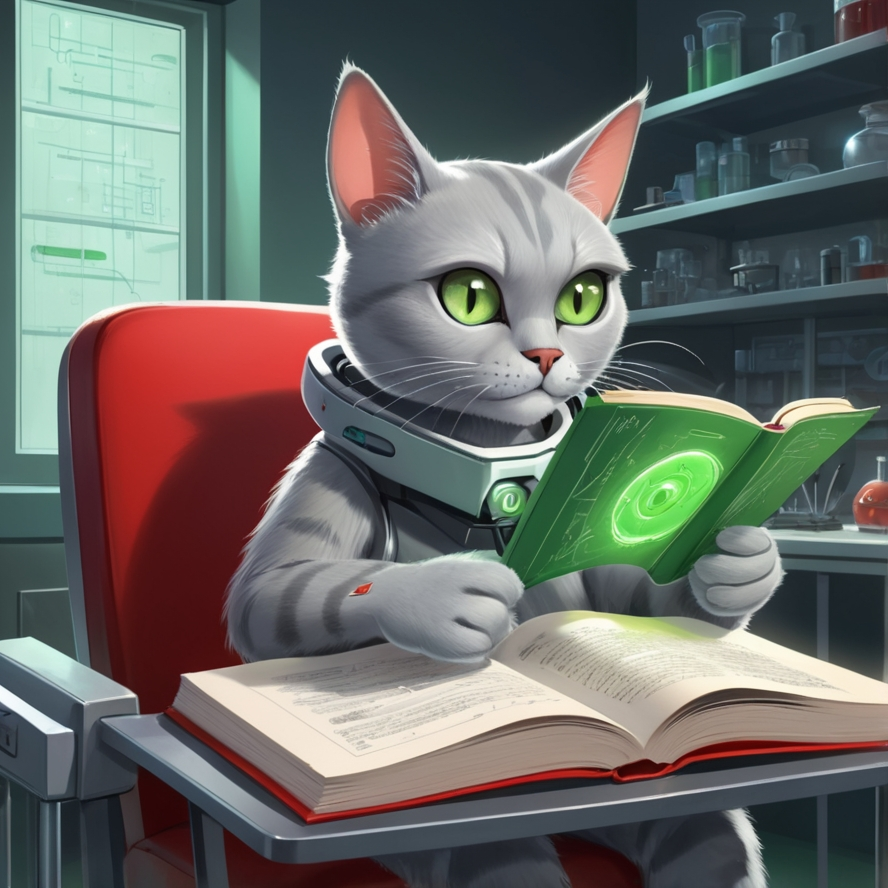
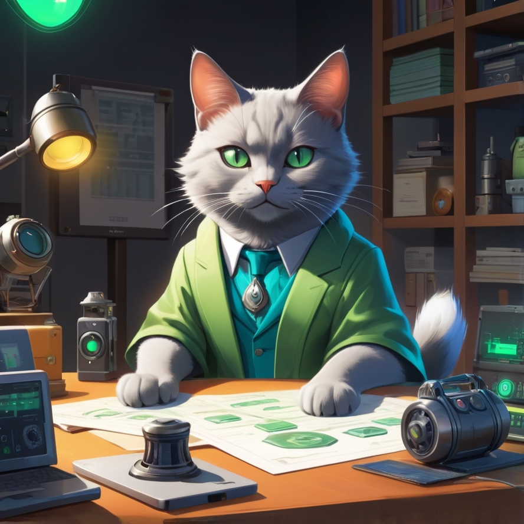

He looks like normal gray cat, but has a piercing gaze of emerald green eyes. Can talk human language, smart (IQ 160), millionaire. He can stimulate and manipulate minds of other people and animals using his invented device. With its high-tech brain, Meowsk can process data at quantum speeds, solving even the most complex problems in the blink of an eye—making it an invaluable companion for traders and developers alike.
Neuroscientist works on medicine that regrows neurons by genetically modifying mice. He normally tests the drug on mice, but decides to test the latest version on his cat who had injured brain.
 The cat’s brain regrows and, moreover, his brain becomes more developed. The cat quietly learns to speak and surprises his owner when starts talking to him.
Meowsk taught himself how to read and starts reading books from scientist’s library. He hooves them all. One day scientist measures his IQ and it results to be 160.
Meowsk, using his brilliant mind, has invented a groundbreaking device: The Quantum Translator. It’s a sleek, high-tech gadget with an almost otherworldly design—shaped like a combination of a headphones-stars with antennae. The device is capable of stimulating the brainwaves of humans and animals, allowing them to absorb knowledge at an exponential rate or even altering their perception and behavior in the blink of an eye.
Meowsk is the quirky mascot of a memecoin that celebrates technology, innovation, and the nerdy side of digital culture. Its blend of playful charm and cutting-edge abilities makes it the perfect symbol for a memecoin that thrives in the online, tech-savvy community. With Meowsk leading the charge, the memecoin becomes not just a digital asset, but a lifestyle, encouraging users to embrace their inner geeks, have fun with technology, and build a thriving, interconnected crypto ecosystem.